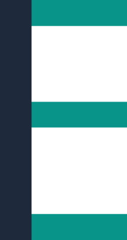

Wortmarke
EasyInvoice
Wir der Name schon verrät, steht EasyInvoice für das einfache Schreiben von Rechnungen vor allem für Kleinunternehmer
Wir sind ein Team von 3 Entwicklern aus dem Raume Wien, die Kleinunternehmern die Buchhaltung vereinfachen wollen
EasyInvoice
Wir der Name schon verrät, steht EasyInvoice für das einfache Schreiben von Rechnungen vor allem für Kleinunternehmer

Unser Logo verschmilzt die Buchstaben E (Easy) und I (Invoice). Während bei grober Betrachtung das "E" sofort heraus sticht, erkennt man auch sehr schnell den dunkleren vertikalen Strich, welcher das "I" darstellt.
Unser Logo wird auf jedem Dokument am rechten unteren Rand platziert, welches somit als visuelles Zertifikat ist für die durch unserer Software erstellten Rechnungen
Nizza-Klassen: Registriert unter Klasse 9 (Software) und Klasse 42 (SaaS/IT-Dienstleistungen).